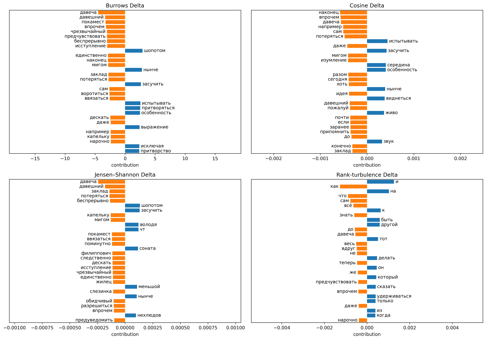
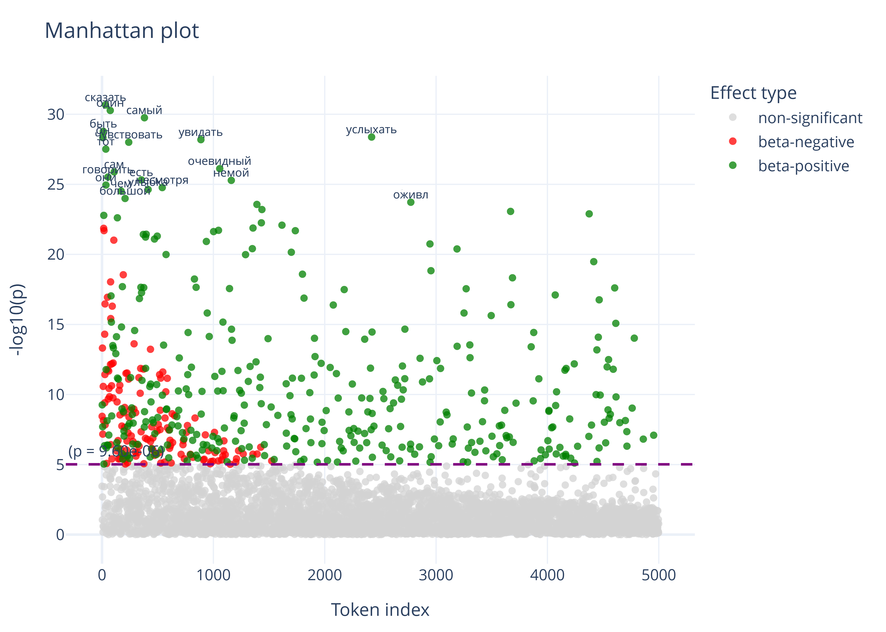

01
Which words make two texts different?
Rank-Turbulence Delta compares word ranks and makes their contributions visible. A closer look at what stylometric distances actually measure.
Rank-Turbulence Delta
Read the explanation
DIGITAL HUMANITIES · HSE UNIVERSITY
I study literary style and develop interpretable methods for computational text analysis. My work connects stylometry, authorship attribution, and digital humanities.
I work at HSE University, where my current position is programmer at the School of Philological Studies, Faculty of Humanities. My research asks how quantitative methods distinguish texts — and how we can explain the differences they find.
Together with Evgeny Kazartsev, I work on interpretable stylometric methods. I also write practical guides and explain digital humanities research for a wider audience.
The question, the method, and the words behind the result.
Rank-Turbulence Delta compares word ranks and makes their contributions visible. A closer look at what stylometric distances actually measure.
Rank-Turbulence Delta
Read the explanation
A statistical workflow inspired by genome-wide association studies: test token associations, account for multiple comparisons, and inspect the evidence.
From Genes to Tokens
Read the explanation
Dmitry Pronin and Evgeny Kazartsev
Digital Scholarship in the Humanities, 41(3), 1616–1630.
Dmitry Pronin and Evgeny Kazartsev
arXiv:2606.09543 · Digital Humanities 2026.
Evgeny Kazartsev and Dmitry Pronin
St Petersburg: Politekhnika. Book in Russian.
Bibliography on Google ScholarPractical guides and field notes in Russian.
System Block · In Russian
System Block · In Russian
System Block · In Russian
System Block · In Russian
Contact
For research conversations, teaching, and questions about the methods, you can find me on Telegram or through my HSE profile.